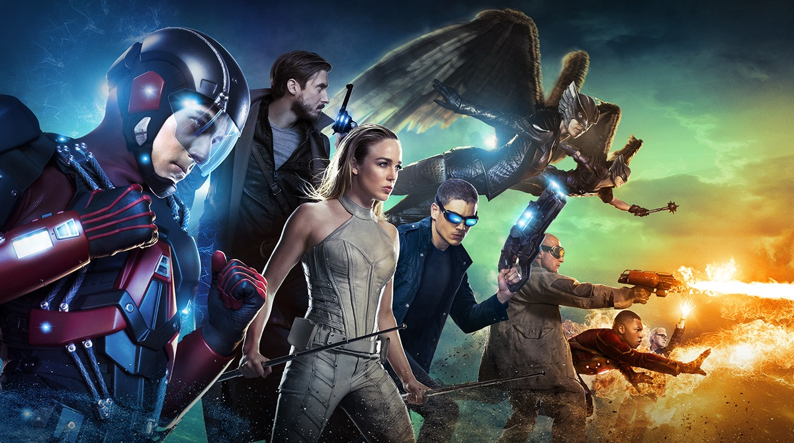
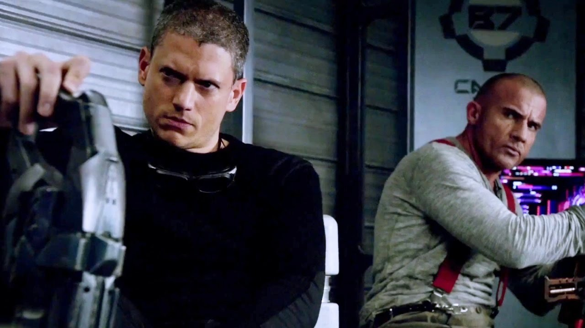
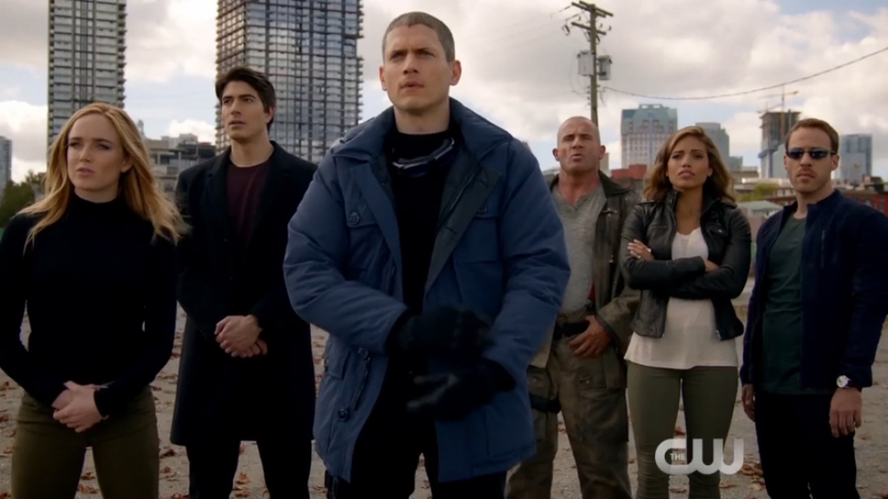
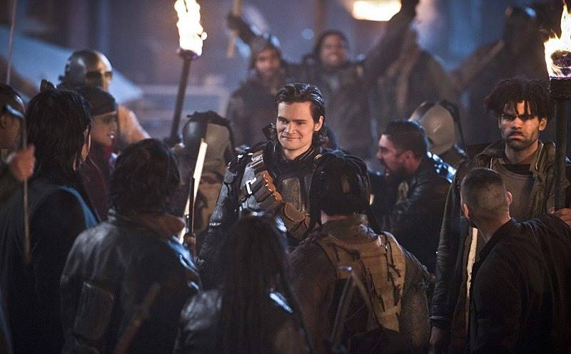
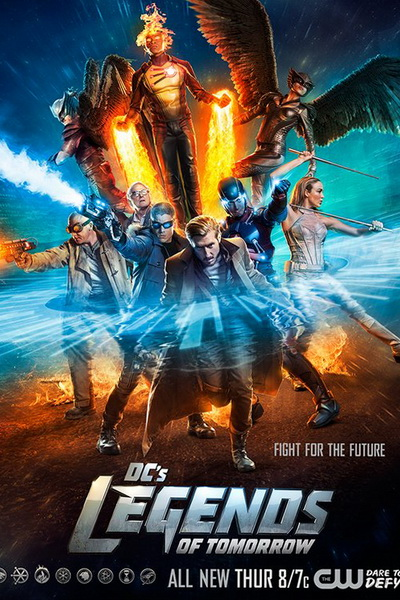

ЗаголовокСлоган | ||
Легенды завтрашнего дняКапитан Рип Хантер повелитель времени с большим стажем. Он уговаривает своё руководство, в обязанности которого входит защита времени, исправить ужасное будущее. Всё дело в том, что в недалёком будущем появится бессмертный диктатор Вандал Сэвидж, который сможет уничтожить огромное количество человек и станет первым в истории, кто полностью покорит планету. Единственная надежда Харпера – это команда смельчаков, которые помогут ему остановить злодея. Для этого он берёт корабль времени и возвращается в 2016 год, чтобы собрать восемь лучших, по его мнению, героев, способных спасти человечество от неминуемой гибели.  Чтобы выполнить эту невероятно опасную и сложную миссию, Рип берёт в свою команду Атома, Огненного шторма, Сару Лэнс, несколько других героев и даже парочку преступников, которые могут быть очень полезны. Впереди команду легенд завтрашнего дня ждут путешествия во времени и стычки с необычными, а порой совершенно неожиданными врагами. При этом герои будут воевать против могущественного и, казалось бы, непобедимого Сэвиджа. Сможет ли небольшая группа смельчаков победить абсолютное зло и спасти весь мир от неминуемо гибели в будущем? Кадры из сериала   Трейлер |

Постер |
|
|
Список сериалов Шерлок Флэш Легенды завтрашнего дня Форс-мажоры Крик |
||